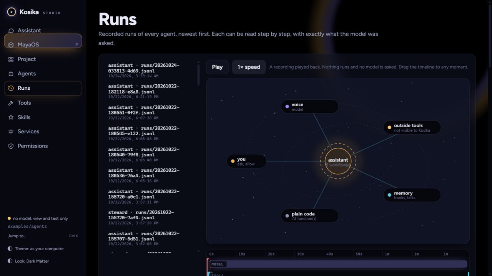
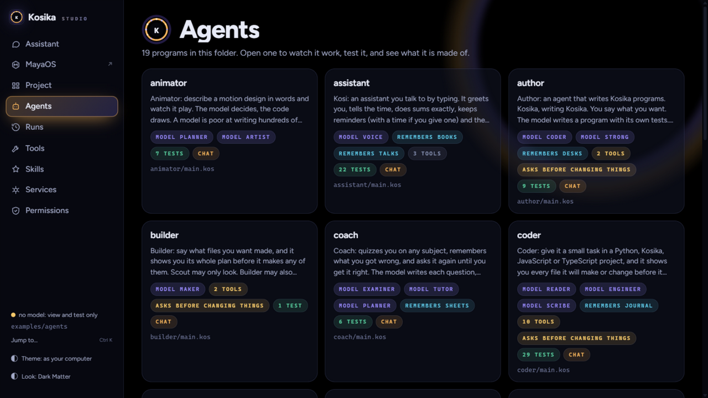

The checker
reads the program before it runs
CHECKEDKosika is a programming language for AI agents, and Studio is where you watch them work. Every program is checked before it runs, every power is a grant you gave, and every run is recorded — replayable to any moment, without asking a model anything.
One gold dot opens the film, becomes the playhead of a real run, then the stamp on a case file, then the period at the end of the sentence. No stock footage, no video model: a canvas drawn by a script, rendered frame by frame, scored from the same timeline.
A point of light draws the ring it will live in. The ring is the run's timeline a second later — nothing is replaced, everything carries.
Model, tools, memory, code — the trace of a real assistant run, played by a gold playhead. 1 model call, 22 steps, 88.6 seconds.
A halftone dot-wipe turns the screen into paper, and three promises get stamped: checked, granted, recorded. Kosi the clerk does the stamping.
Most agent tools ask for trust. Kosika is built to be checked: the language, the runtime, and Studio all carry the same rule — show the work. Four things make that real:
Every program is read by the checker before it runs. A program that does not check does not start. A model can propose; only a checked program executes.
Files, web, other programs — every tool is a grant you gave, and agents ask your yes before anything changes. Nothing is assumed.
Every run leaves a trace: each model call, each tool, each second. Replay is free and asks no model — press play on the past.
Runs carry budgets — steps, seconds, money. When the budget ends, the run ends. No surprises on the bill.
A real recorded run of a real agent — replayed by your scroll, to the tenth of a second. Replay never asks a model; that is the product.
Studio runs on your machine and shows everything: the agents in your folder, what each is made of, what it did, and exactly what the model was asked — the words, not a summary.
Runs — assistant
Recorded runs of every agent, newest first. Each can be read step by step.


The film's second half is a dossier, because that is the claim: an agent's work should be something you can hold and read. Three stamps, and each one is a mechanism in the language — not a slogan.
reads the program before it runs
CHECKEDone grant per tool, asked each time
GRANTEDkept, second by second
RECORDEDThese are not marketing figures — they are the counters the runtime kept while the assistant above answered “why is the sky blue”.
python -m pip install .click to copykosika startclick to copyollama pull qwen2.5:7bclick to copyOne command does the work. kosika start makes an agents folder in your home directory with three starter agents, looks for a model already on your computer, and opens Studio.
It tells you what it found — and it grants nothing: no agent can read your files, start programs or reach the web until you say so.
Only if you granted one, and you can see every call: the exact words sent and returned are in the trace. Replay never calls a model — the run above is a recording, played by your scroll, and the film is a recording too.
Nowhere. Kosika and Studio run on your machine; agents, traces and memories are files in your folder. There is no account, no telemetry, no cloud.
Frameworks hide the machine under abstractions. A small language can be checked: the program you read is the program that runs, and the checker can prove things about it before a single step happens. That is what makes “show the work” a guarantee rather than a promise.
Then the mistake is visible, bounded and recorded — and precise work is done by exact code, not by the model. The model proposes; checked programs execute; budgets cap the damage.
One HTML file with a render(t) function: every frame is a pure function of time, including the paper grain, the halftone dots and the mascot's boiling ink line. It is rendered by a headless browser and encoded with ffmpeg, and the score is synthesised in Python from the same timeline. The source ships with this site, in film/.
Fifteen minutes, one command, and agents that can prove what they did.